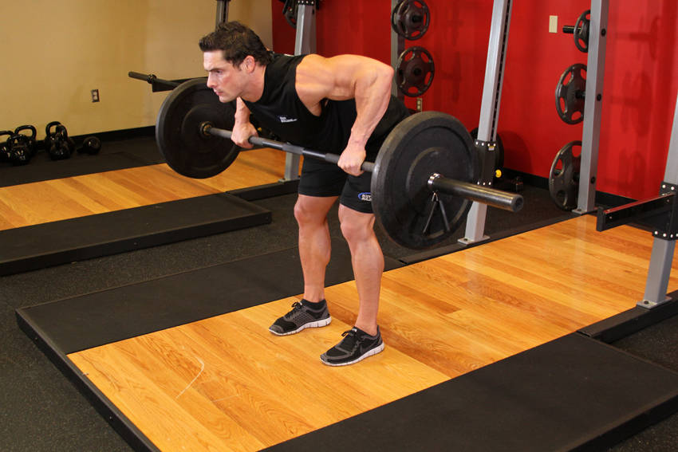

- Stand up straight while holding a barbell using a wide (higher than shoulder width) and overhand (palms facing your body) grip.
- Bend knees slightly and bend over as you keep the natural arch of your back. Let the arms hang in front of you as they hold the bar. Once your torso is parallel to the floor, flare the elbows out and away from your body. Tip: Your torso and your arms should resemble the letter "T". Now you are ready to begin the exercise.
- While keeping the upper arms perpendicular to the torso, pull the barbell up towards your upper chest as you squeeze the rear delts and you breathe out. Tip: When performed correctly, this exercise should resemble a bench press in reverse. Also, refrain from using your biceps to do the work. Focus on targeting the rear delts; the arms should only act as hooks.
- Slowly go back to the initial position as you breathe in.
- Repeat for the recommended amount of repetitions.
This exercise appears in Programmd training programs. Take the quiz to find one for your gym.
Find your program